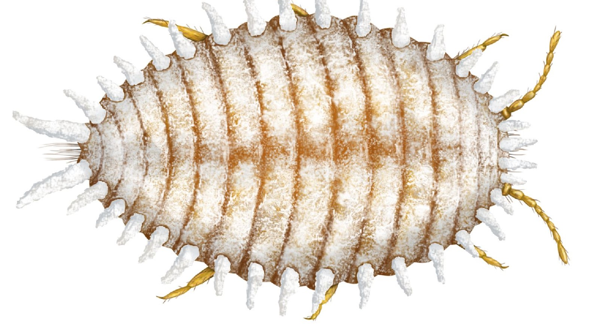
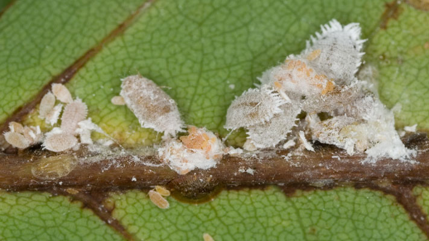
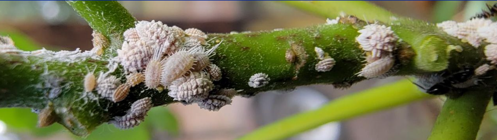

- In orchards where the fruits have been picked, complete the pruning process - leave the dead, diseased branches and dead leaves on the trees.
- Keep an eye on baby mealybugs by spraying control where they appear. For this purpose, apply chloropyriphos 25 ml of methidathion 25 ml or profenofos 25 ml per liter of water on tree trunks from two to two and a half feet above the ground and in the canopy of the plant. Spray on the ground below
- Take measures to protect plants from the harmful effects of fog, especially by pruning and thinning trees like bamboo or other tall trees around the orchards, to allow sunlight and air to pass through the orchards.
- Anticipating frosty nights, make sure to apply a light watering to the orchards.
- If organic fertilizer was not applied in December, ensure to apply 50 to 60 kilograms of well-rotted manure in January. Avoid relying solely on poultry manure.
- After applying fertilizers, irrigate the orchards.
- Carry out the task of inspecting the ripeness and harvesting of fruit during the day after the dew has dried.



Citrus Mealybug